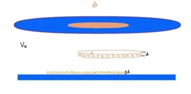

Размер молекулы
Суть эксперимента заключается в следующем: на поверхность воды наносится небольшая капля масла. Со временем она растекается, образуя чрезвычайно тонкий слой. Толщина этого минимального слоя приблизительно соответствует размеру молекулы масла.
Для нахождения размера молекулы вам понадобится: жидкость плотностью р1 (размер молекул которой вы хотите узнать), жидкость плотностью р2>р1, шприц или мерный стаканчик, емкость.
В начале наберите определенное сосуд жидкостью с плотностью р2 и в шприц жидкость плотностью р1 объем V, далее вылейте всё содержимое шприца в емкоть, через неболшой промежуток времени жидкость плотностью р1 должна растечся по поверхности жидкости р2 (если интересующая вас жидкость касается краев сосуда, то возьмите наиболее большой сосуд).
Заметим, что через небольшой промежуток времени (когда жидкость перестанет растекаться) жидкость примет форму прямого не кругового цилиндра (высота грани которого будет равна нескольким молекулам, что конечно дает погрешность в измерениях но для оценки порядка более чем подходит) следовательно высота грани будет равна объему цилиндра V (который был в шприце) делная на площадь цилиндра S (которую мы узнаем посчитав квадратики на миллиметровке) V=S*H => H=V/S
